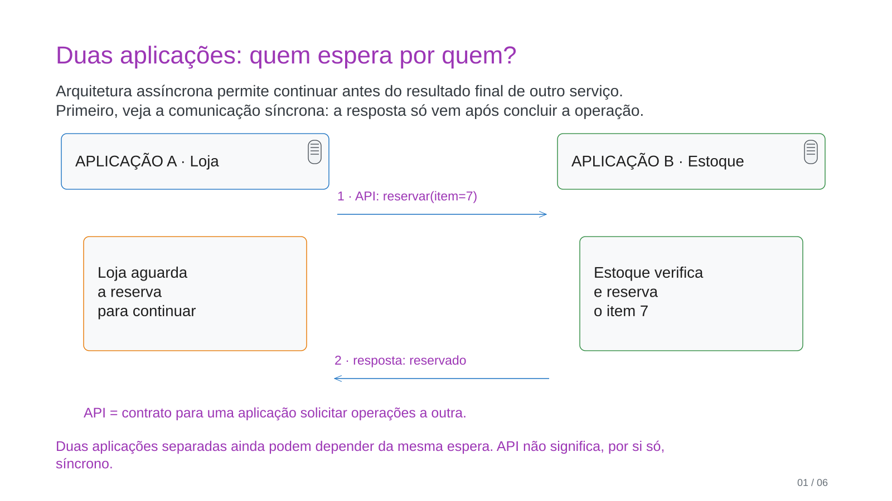
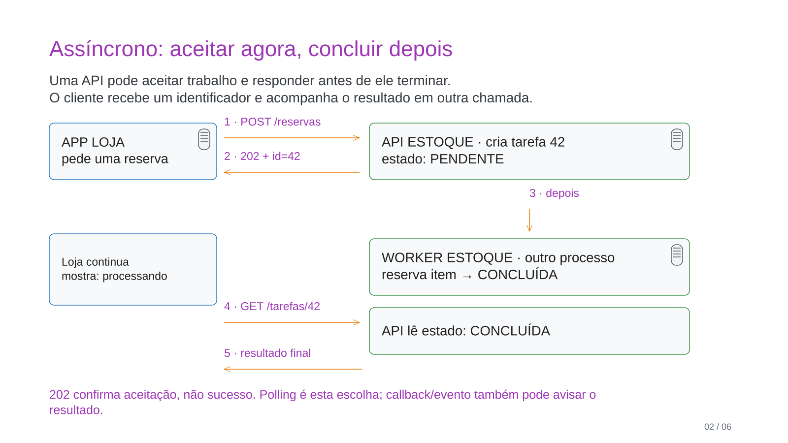
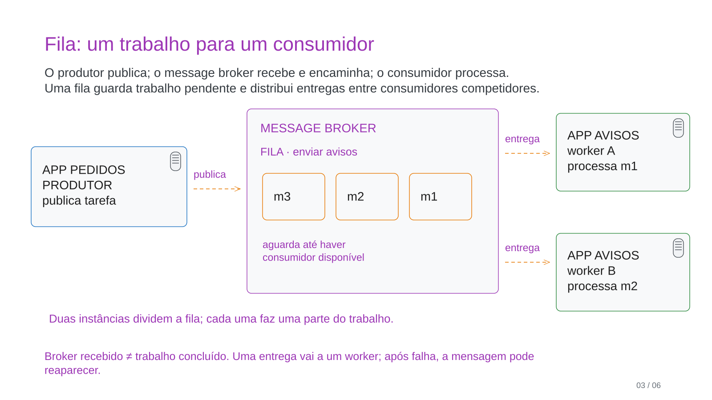
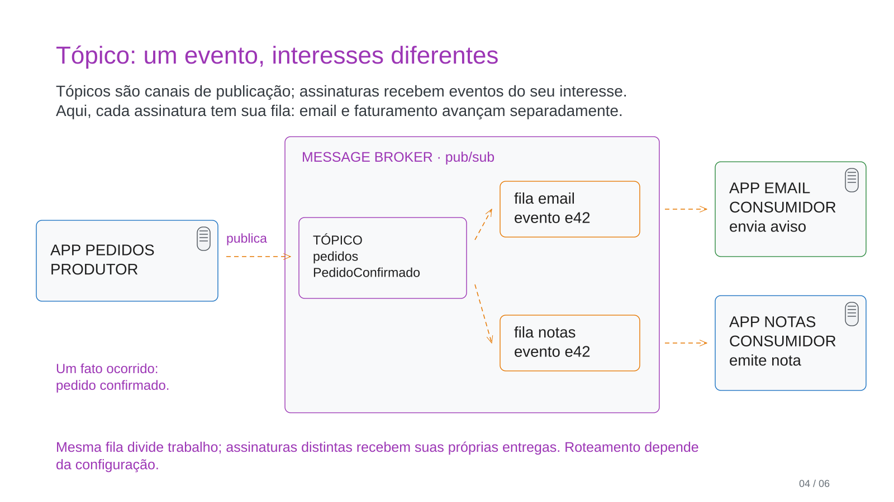
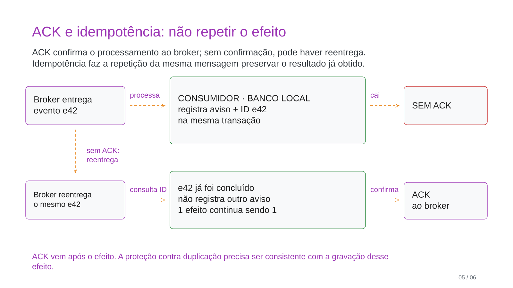
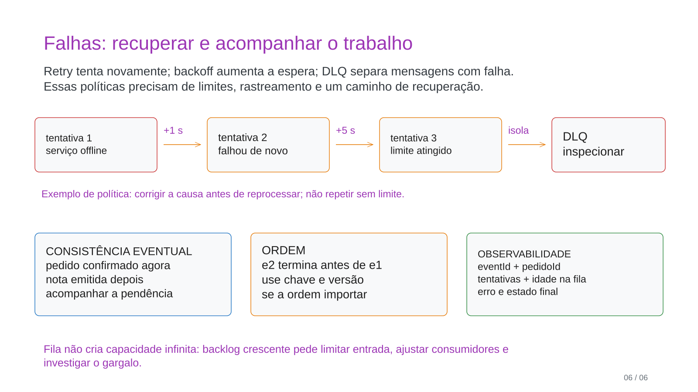

<!doctype html><html lang="pt-BR"><meta charset="utf-8"><title>Duas aplicações: quem espera por quem?</title><style>body{margin:0;background:#eee;font-family:sans-serif}figure{margin:24px auto;max-width:1200px}img{width:100%;box-shadow:0 2px 16px #ccc}figcaption{margin:12px}</style><figure><figcaption>01. Duas aplicações: quem espera por quem?</figcaption></figure><figure><figcaption>02. Assíncrono: aceitar agora, concluir depois</figcaption></figure><figure><figcaption>03. Fila: um trabalho para um consumidor</figcaption></figure><figure><figcaption>04. Tópico: um evento, interesses diferentes</figcaption></figure><figure><figcaption>05. ACK e idempotência: não repetir o efeito</figcaption></figure><figure><figcaption>06. Falhas: recuperar e acompanhar o trabalho</figcaption></figure></html>